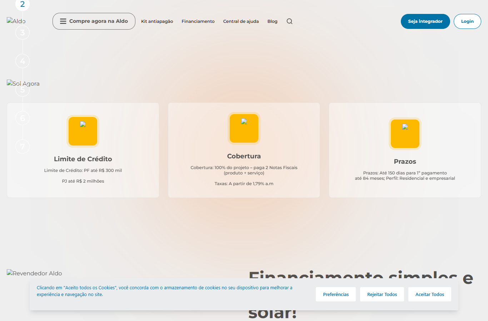
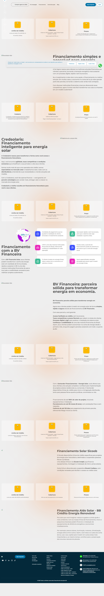

Sistema de Investigação de Marca e Identidade Online
https://www.aldo.com.br/lp/financiamentos-energia-solar
Prioridade: MEDIUM · Cenário: B_AMBIGUOUS_COMMUNICATION · Revisão humana: PENDING
Trata-se da página de financiamentos da distribuidora de energia solar Aldo Solar (Descarbonize Soluções S/A), inserida no escopo de empresas do setor solar que divulgam e intermediam crédito. Embora não haja falsidade ideológica nem tentativa de se passar por canal oficial do Banco BV (contexto claramente multimarcas/multibancos e presença de link para o site oficial bv.com.br), a página promove condições detalhadas do 'Financiamento com a BV Financeira' e capta leads via WhatsApp sem exibir o CNPJ do estabelecimento e sem a declaração formal de correspondente bancário exigida pela Resolução CMN nº 4.935/2021. Classifica-se como B_AMBIGUOUS_COMMUNICATION (REVIEW_REQUIRED / MEDIUM). [Revisor: CONFIRM] Confirma-se a classificação REVIEW_REQUIRED (prioridade MEDIUM). Trata-se de página comercial de empresa do setor de energia solar (Aldo Solar / Descarbonize Soluções S/A) que promove ativamente o 'Financiamento com a BV Financeira' (apresentando limites, taxas e prazos) e capta interessados via WhatsApp sem exibir na página o seu CNPJ, a declaração formal de correspondente bancário e os dados de ouvidoria do Banco BV, conforme exigido pelo art. 14 da Resolução CMN nº 4.935/2021.


| Ref | Tipo | Local | Conteúdo |
|---|---|---|---|
| E-URL | domain | url | URL final: https://www.aldo.com.br/lp/financiamentos-energia-solar (domínio: www.aldo.com.br) |
| E-COLLECT | network | collection | Status da coleta: OK; HTTP 200; ocorrências: network did not become idle (continuing) |
| E-DISC-001 | text | search_index | Índice de busca (grounding): aldo.com.br — **Estabelecimento/Perfil:** Aldo Solar | **URL:** `https://www.aldo.com.br` | **Uso da marca e Conformidade:** Mantém página dedicada com chamadas em destaque como *"Financiamento com a BV Financeira"* e *"BV Financeira: parceira sólida para transformar energia em economia"*, promovendo aprovação rápida e processo digital para integradores e clientes finais (além de manter presença no TikTok listada no rodapé) | Atua como distribuidora/parceira comercial, sem apresentar na chamada promocional o texto padrão de correspondente bancário |
| E-SHOT-VIEWPORT | screenshot | viewport | evidence\C8a6edd8be3\attempt-1\viewport.png (sha256 24728e7db0c4e4d0…) |
| E-SHOT-FULL | screenshot | page | evidence\C8a6edd8be3\attempt-1\fullpage.png (sha256 6d318954c84d91c3…) |
| E-TITLE | title | head | Financiamento de Energia Solar: crédito facilitado | Aldo Solar |
| E-META-1 | meta | head | description: Descubra o financiamento de energia solar da Aldo Solar: crédito facilitado e condições especiais para sua instalação fotovoltaica. |
| E-CANONICAL | meta | head | https://www.aldo.com.br/lp/financiamentos-energia-solar |
| E-HEAD-1 | heading | page | Limite de Crédito |
| E-HEAD-2 | heading | page | Cobertura |
| E-HEAD-3 | heading | page | Prazos |
| E-HEAD-4 | heading | page | Financiamento simples e acessível para energia solar! |
| E-HEAD-5 | heading | page | Cadastro |
| E-HEAD-6 | heading | page | Cobertura |
| E-HEAD-7 | heading | page | Prazo |
| E-HEAD-8 | heading | page | Credsolaris: Financiamento inteligente para energia solar |
| E-HEAD-9 | heading | page | Limite de Crédito |
| E-HEAD-10 | heading | page | Cobertura |
| E-HEAD-11 | heading | page | Prazo |
| E-HEAD-12 | heading | page | Financiamento com a BV Financeira |
| E-HEAD-13 | heading | page | BV Financeira: parceira sólida para transformar energia em economia. |
| E-HEAD-14 | heading | page | BV Financeira: parceira sólida para transformar energia em economia. |
| E-HEAD-15 | heading | page | Limite de Crédito |
| E-HDR | text | header | Compre agora na Aldo Kit antiapagão Financiamento Central de ajuda Blog Seja integrador Login |
| E-FOLD | text | viewport (acima da dobra) | Compre agora na Aldo Kit antiapagão Financiamento Central de ajuda Blog Seja integrador Login 2 3 4 5 6 7 Limite de Crédito Limite de Crédito: PF até R$ 300 mil PJ até R$ 2 milhões Cobertura Cobertura: 100% do projeto – paga 2 Notas Fiscais (produto + serviço) Taxas: A partir de 1,79% a.m Prazos Prazos: Até 150 dias para 1º pagamento até 84 meses; Perfil: Residencial e empresarial Financiamento simples e acessível para energia solar! Clicando em "Aceito todos os Cookies", você concorda com o armazenamento de cookies no seu dispositivo para melhorar a experiência e navegação no site. Preferências Rejeitar Todos Aceitar Todos Opções de Privacidade |
| E-FTR | text | footer | Seja integrador Kit On-Grid Kit Zero-Grid Kit Híbrido Kit Antiapagão Informações corporativas Painéis Solares Baterias Inversores Carregadores Veiculares Medidor Grid Zero String Box Estrutura de montagem Bomba de água Transformador Central de ajuda Fale conosco Venda direta Campanhas Parceiros Condições comerciais Termos de uso Termos de Atendimento Política de Privacidade - LGPD Politica Integrada de Gestão Código de Conduta e Ética - Compliance Código de Conduta e Ética - Fornecedores Manual de Orientação de Entregas WhatsApp | +55 44 3261-2000 24 horas por dia e 7 dias por semana Fale conosco | +55 44 3261-2000 Segunda a sexta, das 8h às 18h E-mail | contato@aldo.com.br Canal Confidencial | 0800 300 4473 descarbonize@canalconfidencial.com.br Acessar canal confidencial Antissuborno e Anticorrupção © 2025 Todos os direitos reservados Descarbonize Soluções S/A |
| E-NAV | nav | header | <https://www.aldo.com.br/> | Kit antiapagão <https://www.aldo.com.br/categoria/energia-solar/gerador-de-energia-solar-fotovoltaico/kit-antiapagao> | Financiamento <https://www.aldo.com.br/lp/financiamentos-energia-solar> | Central de ajuda <https://www.aldo.com.br/central-de-ajuda> | Blog <https://www.aldo.com.br/blog/> | Seja integrador <https://volt.aldo.com.br/pre-cadastro-parceiro> | Login <https://volt.aldo.com.br/login> |
| E-CTA-1 | cta | header | Compre agora na Aldo |
| E-CTA-2 | cta | header | Seja integrador <https://volt.aldo.com.br/pre-cadastro-parceiro> |
| E-CTA-3 | cta | header | Login <https://volt.aldo.com.br/login> |
| E-CTA-4 | cta | page | 1 |
| E-CTA-5 | cta | page | 2 |
| E-CTA-6 | cta | page | 3 |
| E-CTA-7 | cta | page | 4 |
| E-CTA-8 | cta | page | 5 |
| E-CTA-9 | cta | page | 6 |
| E-CTA-10 | cta | page | 7 |
| E-CTA-11 | cta | footer | Seja integrador <https://volt.aldo.com.br/pre-cadastro-parceiro> |
| E-CTA-12 | cta | page | Preferências |
| E-CTA-13 | cta | page | Rejeitar Todos |
| E-CTA-14 | cta | page | Aceitar Todos |
| E-CONTACT-1 | contact | page | Fale conosco <https://wa.me/5544991538867> |
| E-CONTACT-2 | contact | page | Consulte as opções de financiamento Credsolaris <https://wa.me/5544991538867> |
| E-CONTACT-3 | contact | page | Confira o financiamento Santander <https://wa.me/5544991538867> |
| E-CONTACT-4 | contact | page | Financiamento Solar é com a Aldo <https://wa.me/5544991538867> |
| E-CONTACT-5 | contact | page | Simular Financiamento <https://wa.me/5544991538867> |
| E-CONTACT-6 | contact | page | <https://wa.me/5544991538867> |
| E-CONTACT-7 | contact | footer | <https://www.facebook.com/AldoSolarDistribuidora> |
| E-CONTACT-8 | contact | footer | <https://www.instagram.com/aldosolaroficial> |
| E-CONTACT-9 | contact | footer | contato@aldo.com.br <mailto:contato@aldo.com.br> |
| E-IMG-1 | image | page | imagem alt='BV Financeira' src=https://pub-acc601a6ccc74aae8e50f0d6b0f59253.r2.dev/tWPCtZR6FnDPw6V_NiDvT.png (1328x24, abaixo da dobra) |
| E-OFFICIAL-LINKS | link | page | Simular Financiamento <https://www.bv.com.br/financiamento/solar> |
| E-TXT-001 | text | page | A Sol Agora nasceu para oferecer as melhores soluções financeiras aos clientes e parceiros, tornando a transição energética mais acessível com um processo digital, rápido e sem burocracia. |
| E-TXT-002 | text | page | Com diversas instituições financeiras e bancos oferecendo taxas competitivas, agora é ainda mais fácil transformar sua casa ou empresa em um modelo sustentável! |
| E-TXT-003 | text | page | Com a Credsolaris, você não apenas financia — você garante um parceiro estratégico para vender mais, entregar valor e crescer no mercado de energia solar. |
| E-TXT-004 | text | page | Financiamento com a BV Financeira |
| E-TXT-005 | text | page | Com a BV Financeira Solar, seus clientes podem transformar o sonho da energia solar em realidade de forma simples, rápida e acessível. A BV é uma das maiores instituições financeiras do país e traz toda a credibilidade necessária para viabilizar projetos sustentáveis. |
| E-TXT-006 | text | page | A BV é uma das maiores instituições financeiras do Brasil, oferecendo confiança e estabilidade em cada operação. |
| E-TXT-007 | text | page | BV Financeira: parceira sólida para transformar energia em economia. |
| E-TXT-008 | text | page | BV Financeira: parceira sólida para transformar energia em economia. |
| E-TXT-009 | text | page | Agora seus clientes podem investir em energia solar de forma simples, rápida e segura através do financiamento da BV Financeira. |
| E-TXT-010 | text | page | Assim, seus clientes podem economizar na conta de energia desde o primeiro mês, enquanto pagam parcelas acessíveis com todo o suporte da BV. |
| E-TXT-011 | text | page | Parceiros |
| E-TXT-012 | text | page | Termos de Atendimento |
| E-TXT-013 | text | page | WhatsApp | +55 44 3261-2000 |
| Dimensão | Sinal | Achado | Refs |
|---|---|---|---|
| VISUAL_IDENTITY | LEGITIMATE | A página utiliza identidade visual própria da Aldo Solar e apresenta múltiplas instituições financeiras parceiras (Sol Agora, Credsolaris, BV Financeira, Santander, Sicoob, Banco do Brasil), sem imitar o layout oficial do Banco BV. | E-SHOT-VIEWPORT E-SHOT-FULL E-TITLE |
| DECLARED_COMMERCIAL_IDENTITY | CONFUSION | O rodapé menciona 'Descarbonize Soluções S/A' e a marca 'Aldo Solar', mas omite o número do CNPJ na página em que oferta produtos financeiros. | E-FTR E-SHOT-FULL |
| CORRESPONDENT_TRANSPARENCY | CONFUSION | Ausência de declaração expressa e visível da condição de correspondente bancário e ausência de divulgação dos telefones da ouvidoria do banco parceiro, apesar de detalhar condições de crédito e direcionar para atendimento comercial. | E-DISC-001 E-HEAD-12 E-HEAD-13 E-FTR E-SHOT-FULL |
| INSTITUTIONAL_LANGUAGE | LEGITIMATE | A linguagem é em terceira pessoa, referindo-se à BV Financeira como instituição parceira ('Financiamento com a BV Financeira', 'BV Financeira: parceira sólida para transformar energia em economia'), sem alegar ser canal oficial do banco. | E-HEAD-12 E-HEAD-13 E-TXT-005 E-TXT-009 |
| LOGO_USAGE | NEUTRAL | Há referência a imagem com atributo alt='BV Financeira' (não renderizada visualmente na captura de tela completa), inserida em seção dedicada à parceria. | E-IMG-1 E-SHOT-FULL |
| SERVICE_JOURNEY | NEUTRAL | A página apresenta condições comerciais de financiamento (limites, cobertura, taxas a partir de 1,67% a.m. e prazos) e disponibiliza tanto link externo para o site oficial do Banco BV quanto botões de captação via WhatsApp da própria distribuidora. | E-OFFICIAL-LINKS E-CONTACT-4 E-CONTACT-5 E-SHOT-FULL |
| CONTACT_CHANNELS | NEUTRAL | Os canais de contato exibidos pertencem claramente à Aldo Solar (WhatsApp +55 44 3261-2000 / +55 44 99153-8867 e e-mail contato@aldo.com.br), sem tentar passá-los como central de atendimento do banco. | E-FTR E-CONTACT-1 E-CONTACT-5 E-CONTACT-9 |
| CONSUMER_CONFUSION | LEGITIMATE | Baixo risco de o consumidor confundir o site com um canal próprio do Banco BV, dado o contexto multibancos e a identidade clara da distribuidora Aldo Solar, restando apenas pendências formais de transparência de correspondente/parceiro. | E-TITLE E-SHOT-FULL E-FTR |
Trata-se da página de financiamentos da distribuidora de energia solar Aldo Solar (Descarbonize Soluções S/A), inserida no escopo de empresas do setor solar que divulgam e intermediam crédito. Embora não haja falsidade ideológica nem tentativa de se passar por canal oficial do Banco BV (contexto claramente multimarcas/multibancos e presença de link para o site oficial bv.com.br), a página promove condições detalhadas do 'Financiamento com a BV Financeira' e capta leads via WhatsApp sem exibir o CNPJ do estabelecimento e sem a declaração formal de correspondente bancário exigida pela Resolução CMN nº 4.935/2021. Classifica-se como B_AMBIGUOUS_COMMUNICATION (REVIEW_REQUIRED / MEDIUM).
Há declaração de correspondente ou de parceria, sem identificação suficiente ou sem confirmação cadastral.
| Tipo | Valor | Ref | Contexto |
|---|---|---|---|
| domain | aldo.com.br | E-URL | |
| legal_name | Descarbonize Soluções S/A | E-FTR | |
| contato@aldo.com.br | E-FTR | ||
| descarbonize@canalconfidencial.com.br | E-FTR | ||
| social_profile | https://www.facebook.com/AldoSolarDistribuidora | E-CONTACT-7 | |
| social_profile | https://www.instagram.com/aldosolaroficial | E-CONTACT-8 | |
| phone | 44 3261-2000 | E-FTR | |
| phone | 0800 300 4473 | E-FTR | |
| Fale conosco <https://wa.me/5544991538867> | E-CONTACT-1 | ||
| Consulte as opções de financiamento Credsolaris <https://wa.me/5544991538867> | E-CONTACT-2 | ||
| Confira o financiamento Santander <https://wa.me/5544991538867> | E-CONTACT-3 | ||
| Financiamento Solar é com a Aldo <https://wa.me/5544991538867> | E-CONTACT-4 | ||
| Simular Financiamento <https://wa.me/5544991538867> | E-CONTACT-5 | ||
| partnership_declaration | parceira | E-DISC-001 | **Uso da marca e Conformidade:** Mantém página dedicada com chamadas em destaque como *"Financiamento com a BV Financeira"* e *"BV Financeira: parceira sólida para transformar energia em economia"*, p |
Mapeamento indicativo para apoio à auditoria. Não constitui conclusão regulatória; a decisão definitiva pertence à auditoria.
Fonte: NORMATIVE
Art. 14. O contrato de correspondente deve estabelecer: [...] II - vedação à utilização, pelo contratado, de logomarca ou de outros atributos que sejam similares aos adotados pela instituição contratante em suas agências, postos de atendimento, sítio eletrônico na internet, aplicativo ou outras plataformas de comunicação em rede;
Evidência observada: E-SHOT-FULL E-SHOT-VIEWPORT E-TITLE
Fonte: NORMATIVE
Art. 14. O contrato de correspondente deve estabelecer: [...] III - divulgação ao público, pelo contratado, de sua condição de prestador de serviços à instituição contratante, identificada pelo nome com que é conhecida no mercado, com descrição dos produtos e serviços oferecidos e canais de contato da instituição contratante, inclusive de sua ouvidoria, em local visível, em destaque e em formato legível, por meio de: a) sítio eletrônico do correspondente na internet, acessível na página inicial; b) aplicativo e outras plataformas de comunicação em rede do correspondente; [...]
Hipótese: Divulgação ao público da condição de prestador de serviços à contratante ausente, insuficiente ou sem destaque. Aplicável somente se confirmado o vínculo de correspondente.
Evidência observada: E-DISC-001 E-FTR E-HEAD-12 E-HEAD-13 E-SHOT-FULL E-TXT-005
Informação faltante:
Fonte: NORMATIVE
Art. 3º O correspondente atua por conta e sob as diretrizes da instituição contratante, que assume inteira responsabilidade pelo atendimento prestado aos clientes e usuários por meio do contratado.
Evidência observada: —
Limitações: requisitos contratuais/internos não fornecidos: mapeamento limitado ao texto normativo
Decisão: CONFIRM → REVIEW_REQUIRED / MEDIUM
Confirma-se a classificação REVIEW_REQUIRED (prioridade MEDIUM). Trata-se de página comercial de empresa do setor de energia solar (Aldo Solar / Descarbonize Soluções S/A) que promove ativamente o 'Financiamento com a BV Financeira' (apresentando limites, taxas e prazos) e capta interessados via WhatsApp sem exibir na página o seu CNPJ, a declaração formal de correspondente bancário e os dados de ouvidoria do Banco BV, conforme exigido pelo art. 14 da Resolução CMN nº 4.935/2021.
| Tema | Severidade | Questionamento | Refs |
|---|---|---|---|
| Identidade Comercial e Parceria Legítima | MEDIUM | A página pertence a uma grande distribuidora de equipamentos solares (Aldo Solar / Descarbonize Soluções S/A), atua em contexto multibancos e possui link direto para o site oficial do Banco BV, mas omite o CNPJ, a condição explícita de correspondente bancário e a ouvidoria da instituição financeira contratante ao ofertar condições de financiamento e captar leads via WhatsApp. | E-TITLE E-HEAD-12 E-HEAD-13 E-TXT-005 E-FTR E-OFFICIAL-LINKS E-SHOT-FULL |
| Fonte | Consulta / hipótese | URL original | Título / trecho |
|---|---|---|---|
| grounding | Objetivo: Perfis no TikTok e páginas de empresas no LinkedIn apresentando-se como correspondentes ou parceiros da marca.
Execute no Google Search as seguintes consultas (dorks):
- site:tiktok.com ("Banco BV" OR "bv financeira") financiamento -inurl:/@bancobv -inurl:/discover/ -site:bv.com.br -site:bancobv.com.br -site:bvfinanceira.com.br -site:bvinvestimentos.com.br -site:napista.com.br -site:bvopen.com.br -site:meufinanciamentosolar.com.br -site:votorantim.com.br -site:vam.com.br
- site:linkedin.com/company "correspondente" ("Banco BV" OR "bv financeira") -inurl:/company/bancobv -site:bv.com.br -site:bancobv.com.br -site:bvfinanceira.com.br -site:bvinvestimentos.com.br -site:napista.com.br -site:bvopen.com.br -site:meufinanciamentosolar.com.br -site:votorantim.com.br -site:vam.com.br
Liste de forma abrangente as páginas públicas encontradas (até 12 resultados distintos), informando para cada uma o nome do estabelecimento/perfil, a URL e como a marca é utilizada (destaque visual, título, feirão, simulador, redes sociais e se há ou não identificação clara de CNPJ e condição de correspondente bancário). H6-platform:TikTok-LinkedIn | https://www.aldo.com.br/lp/financiamentos-energia-solar | aldo.com.br **Estabelecimento/Perfil:** Aldo Solar | **URL:** `https://www.aldo.com.br` | **Uso da marca e Conformidade:** Mantém página dedicada com chamadas em destaque como *"Financiamento com a BV Financeira"* e *"BV Financeira: parceira sólida para transformar energia em economia"*, promovendo aprovação rápida e processo digital para integradores e clientes finais (além de manter presença no TikTok listada no rodapé) | Atua como distribuidora/parceira comercial, sem apresentar na chamada promocional o texto padrão de correspondente bancário |
Original: https://www.aldo.com.br/lp/financiamentos-energia-solar
Final: https://www.aldo.com.br/lp/financiamentos-energia-solar
| Artefato | Caminho | SHA-256 | Bytes |
|---|---|---|---|
| screenshot_viewport | evidence\C8a6edd8be3\attempt-1\viewport.png | 24728e7db0c4e4d07d6dfd7d2bc7d54c1c23d9a3c51cddb16ef866cecbd76ceb | 147184 |
| screenshot_full | evidence\C8a6edd8be3\attempt-1\fullpage.png | 6d318954c84d91c30875cc459b1dc0f35687eed7b9d50e9a0f4aa598062363ce | 1488083 |
| html | evidence\C8a6edd8be3\attempt-1\page.html.txt | eea62e0f581b5f1ae08bd331a95f2de09fe367af4fb50c2fb104f6fff803b985 | 430121 |
| text | evidence\C8a6edd8be3\attempt-1\text.txt | 1f151317e54c8d7b9f68b5f977133b8d70b254437388073410932c9e29ea0256 | 7659 |
| page_data | evidence\C8a6edd8be3\attempt-1\page.json | 5c76305149edf3c747a2920bc12e3f23a25b80fa3b066e7a54c003ded039b5b3 | 35492 |
| Quando | De | Para | Nota |
|---|---|---|---|
| 2026-11-23T14:17:58+00:00 | DISCOVERED | QUEUED | prioritised (score 1.0) |
| 2026-11-23T14:50:50+00:00 | QUEUED | COLLECTING | |
| 2026-11-23T14:51:14+00:00 | COLLECTING | COLLECTED | |
| 2026-11-23T14:51:14+00:00 | COLLECTED | ANALYZING | |
| 2026-11-23T14:51:44+00:00 | ANALYZING | REVIEWING | |
| 2026-11-23T14:51:58+00:00 | REVIEWING | COMPLETED |